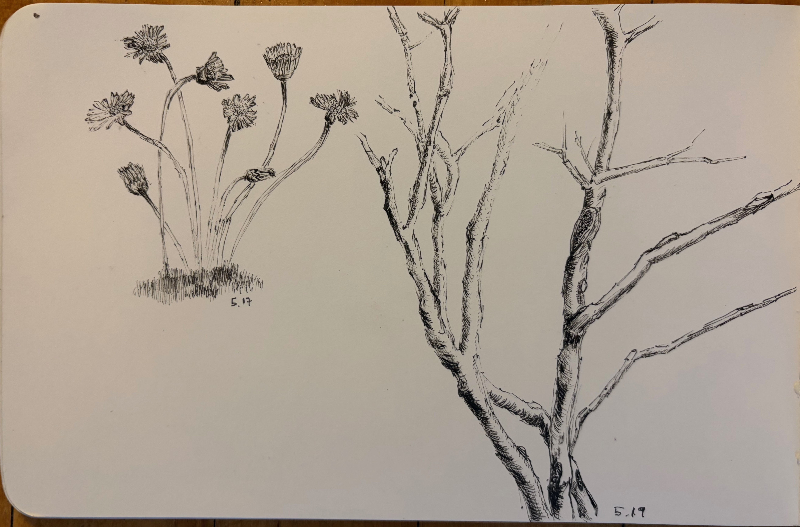
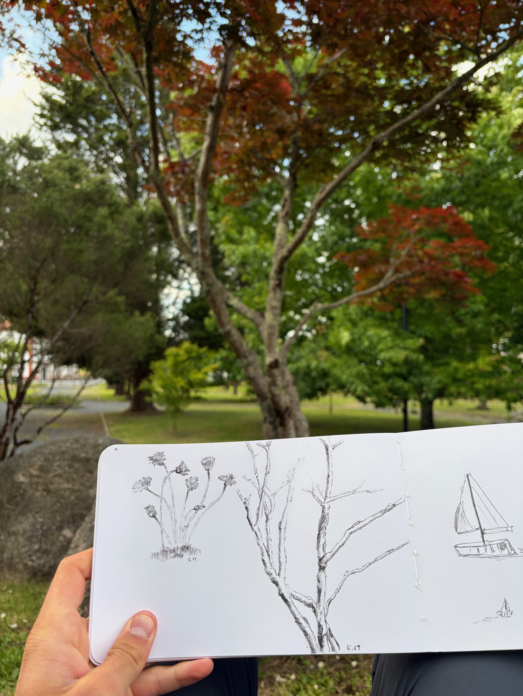
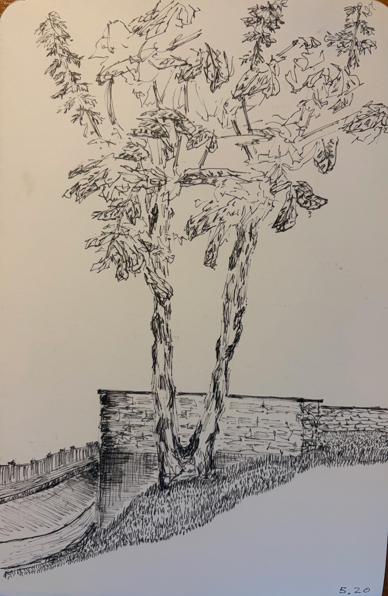
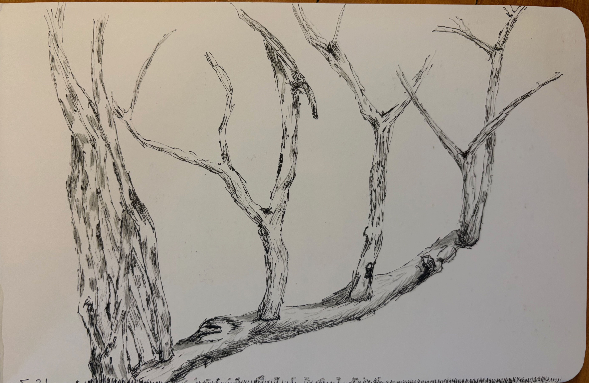
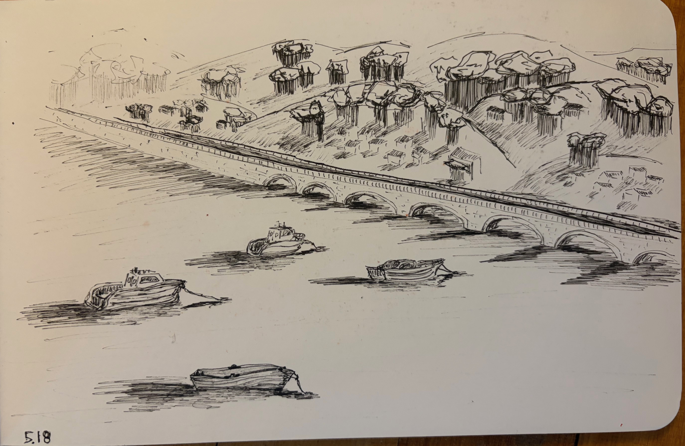

Pen sketches from my week backpacking El Norte on El Camino de Santiago in northern Spain. I had been to an artist's residency showing the week before and was inspired by his careful observations and thoughts on trees, which prompted my own interest in them over the course of this trip and time outside.




